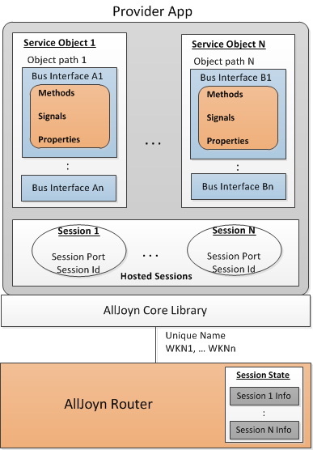
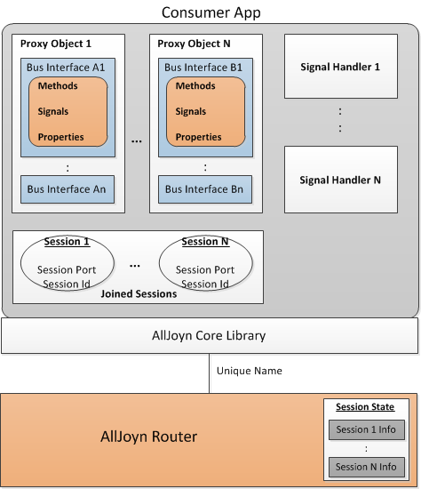
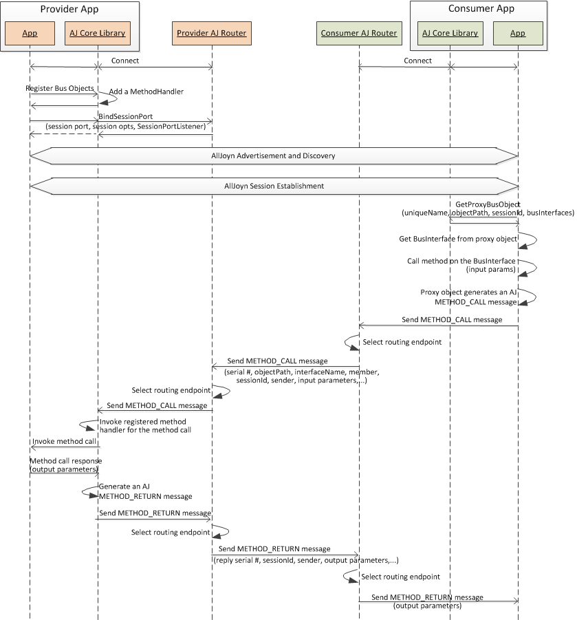
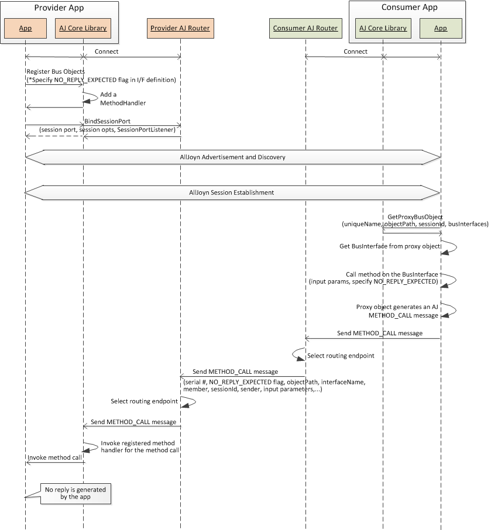
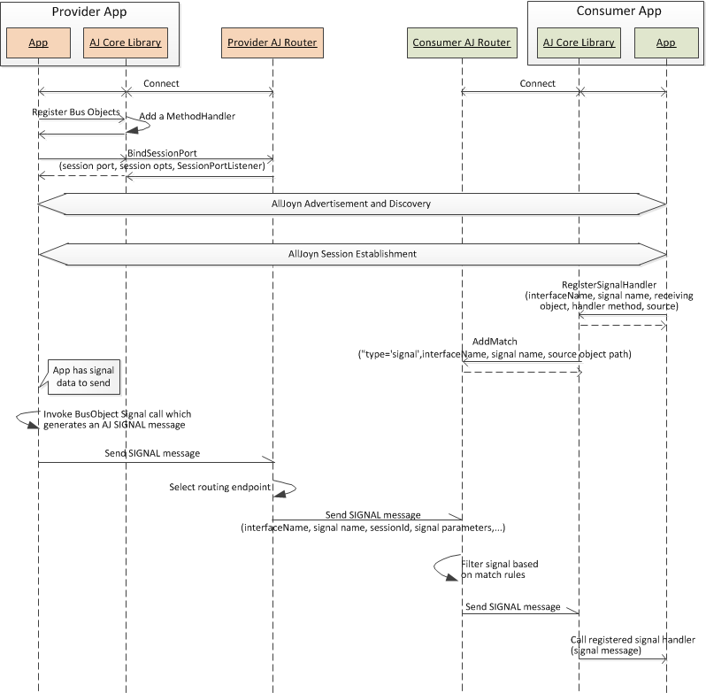
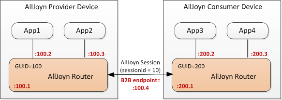

Data Exchange
Overview
The AllJoyn™ provider application implements one or more service objects that provide service functionality. These service objects implement one or more Bus interfaces which support methods, signals, and/or properties as interface members. AllJoyn applications can exchange data using these interface members. An AllJoyn session must be established to exchange data between provider and consumer applications except when sending sessionless signals (see Sessionless Signal).
NOTE: AllJoyn service objects are not tied to any specific AllJoyn session. Any service object can be accessed over any AllJoyn session.
The following figure shows the functional architecture for the provider application.

Figure: Provider functional architecture
Aspects about the architecture follow.
- Each service object has an associated object path which app may decide to announce as part of About feature's announcement signal.
- A provider device can host one or more AllJoyn sessions.
- The provider app maintains distinct session port and a session Id for each hosted session among other parameters.
- The provider application endpoint connected to the AllJoyn router has one associated unique name and one or more well-known names advertised by the application.
- The AllJoyn router maintains session related state information.
This information is used to perform sessionId-based routing for AllJoyn messages.
Once a session is established, the provider application can communicate with consumer apps via interface methods and properties when invoked by the consumer side. The provider app can also send signals specified in the bus interfaces to send data to consumer apps.
After an AllJoyn session is established, the consumer application has the connection established to exchange data with the provider app. The consumer app in a session can invoke methods and properties on the remote service objects, or can opt to receive signals emitted by the provider app. A ProxyBusObject is needed to exchange data via methods and properties. A signal handler is needed to receive signal data from the provider app.
The following figure shows the functional architecture for the consumer application.

Figure: Consumer functional architecture
Aspects of this architecture follow.
- A consumer app can join one or more AllJoyn sessions which can be with the same or different provider apps.
- The consumer app creates one or more proxy objects, one for each remote service object it wants to communicate with.
- A proxy object is a local representation of the desired remote service object on the provider app.
- The service object path, unique name of the provider app and sessionId information are provided to create a proxy object.
- To receive signals from the provider app, consumer app registers specific signal handlers with the AllJoyn router for signal names specified in the service object.
- When a particular signal is received, specified signal handler gets invoked.
- The consumer application endpoint connected to the AllJoyn router has one associated unique name.
- The AllJoyn router maintains session-related state information for the joined sessions. This information is used to perform sessionId based routing for AllJoyn messages.
Data exchange via methods
The following use cases illustrate data exchange via method calls:
- Provider app sending a reply
- Provider app not sending a reply
Provider app sending a reply
The following figure captures the message flow for the scenario when a consumer app remotely invokes a method call on the provider app to exchange data. A METHOD_RETURN reply message is sent back to the consumer app.

Figure: Data exchange via method calls (reply sent)
The message flow steps are described below.
- Both the provider and consumer apps connect to the AllJoyn router and perform advertisement and discovery steps to discover desired services.
- The provider app registers its service objects with the AllJoyn core library. This step is needed to expose service objects to remote nodes on the network. The AllJoyn core library adds a MethodHandler for all the methods associated with a given service object.
- The provider app binds a session port with the AllJoyn router via the AllJoyn core library's BindSessionPort API. This call specifies a session port, session options and a SessionPortListener for the session.
- The provider and consumer apps perform AllJoyn service advertisement and discovery to discover the service offered by the provider app.
- The consumer app establishes an AllJoyn session with the provider app over the bound session port. Now there is a session connection established between provider and consumer app to exchange data.
- The consumer app creates a proxyBusObect via the AllJoyn core library's GetProxyBusObjcet API. The app specifies unique name of provider app, object path for the service object, sessionId, and list of BusInterfaces to which the proxy object should respond.
- The consumer app gets the BusInterface from the created proxy object and calls a method on this BusInterface. The app provides input parameters for the method.
- The ProxyBusObject:MethodCall method is called, which generates an AllJoyn METHOD_CALL message for the method call.
- The proxy object sends the generated METHOD_CALL message to the AllJoyn router.
- The AllJoyn router receives the message and determines where this message needs to be routed based on the session ID/destination information included in the message. In this case, the message needs to be routed to remote AllJoyn router endpoint at the provider.
- The AllJoyn router sends the METHOD_CALL message to the remote AllJoyn router over the established session connection. The METHOD_CALL message includes a serial number, service objectPath, interfaceName in the service object, member name (method name) within the interfaceName, sessionId, and sender unique name as part of the header fields of the message. The method input parameters are included as part of the message body.
- The provider AllJoyn router receives the METHOD_CALL message. It determines where this message needs to be routed based on the session ID/destination information. In this case, the message needs to be routed to the AllJoyn core library app endpoint.
- The AllJoyn router sends the METHOD_CALL message to the AllJoyn core library endpoint.
- The AllJoyn core library invokes the registered MethodHandler for the method call member specified in the received message. The MethodHandler invokes the actual method call with the BusInterface of the service object and receives the method response. It generates a METHOD_RETURN message for the method reply and sends to the AllJoyn router.
- The AllJoyn router receives the METHOD_RETURN message and determines where this message needs to be routed based on session ID/destination information included in the message. In this case, the message needs to be routed to the remote AllJoyn router endpoint at the consumer.
- The provider AllJoyn router sends the METHOD_RETURN message to the remote AllJoyn router over established session connection. The METHOD_RETURN message includes a reply serial number (serial number of the associated METHOD_CALL message), sessionId, and sender's unique name as part of message header fields. Any output parameters for the METHOD_RETURN message is specified as part of the message body.
- The consumer AllJoyn router receives the METHOD_RETURN message. It determines where this message needs to be routed based on the session ID/destination information. In this case, the message needs to be routed to the app endpoint.
- The AllJoyn router sends the METHOD_RETURN message to the application's endpoint with output parameters as the response to the original METHOD_CALL message. If the METHOD_CALL message was sent asynchronously, a ReplyHandler gets registered which is invoked when the METHOD_RETURN message is received.
Provider app not sending a reply
When defining an interface definition, the provider can annotate some methods that are not returning any output parameters as NO_REPLY_EXPECTED. For such methods, the provider app will not be sending any METHOD_RETURN message back to the consumer. When invoking such a method, the consumer should set the NO_REPLY_EXPECTED flag to indicate to the AllJoyn core library that it does not need to start a timer and wait for a reply from the provider.
The following figure shows the message flow for the scenario when a method is invoked with the NO_REPLY_EXPECTED flag set, and no reply is sent by the provider app.

Figure: Data exchange via method calls (reply not sent)
Most of the message flow steps are similar to the reply sent message flow returning a method reply. The following captures the distinguishing steps with respect to that flow.
- When defining a service interface, provider app annotates one or more methods in the interface as NO_REPLY_EXPECTED. The service object implementing the service interface gets registered with the AllJoyn core library.
- On the consumer side, when that method call is invoked via ProxyObject interfaces, the consumer sets the NO_REPLY_EXPECTED flag. This indicates to the AllJoyn core library that it does not need to start a timer and wait for a reply from the provider.
- The METHOD_CALL message reaches the provider app and the associated method gets invoked. Since the method was annotated with NO_REPLY_EXPECTED, the provider app does not generate any reply.
Data exchange via signals
The following figure captures the message flow for the scenario when consumer app registers to receive signals from the provider app to exchange data.

Figure: Data exchange via signals
A signal gets forwarded to all participants in a session if only sessionId is specified in the header (no destination field).
If a specific destination is specified in the header field, then the signal is only sent to that participant.
The message flow steps are described below.
- Both the provider and consumer apps connect to the AllJoyn router and perform advertisement and discovery steps to discover desired services.
- The provider app registers its service objects with the AllJoyn core library. This step is needed to expose service objects to remote nodes on the network. The AllJoyn core library adds a MethodHandler for all the methods associated with a given service object.
- The provider app binds a session port with the AllJoyn router via the AllJoyn core library's BindSessionPort API. This call specifies a session port, session options, and a SessionPortListener for the session.
- The provider and consumer apps perform AllJoyn service advertisement and discovery to discover the service offered by the provider app.
- The consumer app establishes an AllJoyn session with the provider app over the bound session port. Now there is a session connection established between provider and consumer app to exchange data.
- The consumer app registers a signal handler for receiving specific signal from the provider side service object by invoking RegisterSignalHandler API with the AllJoyn core library. The app specifies the interface name for the interface which includes the signal, name of the signal, object path for the object receiving the signal, signal handler method, and source object path for signal emitter.
- The AllJoyn core library invokes an AddMatch call with the AllJoyn router to register the rule to receive this signal. This rule specifies type=signal, interface name, signal member name, and source object path for the object generating the signal.
- When the provider app has the signal to send, it invokes the BusObject Signal(...) call specifying all the signal parameters. This call generates an AllJoyn SIGNAL message.
- The SIGNAL message gets sent to the AllJoyn router.
- The AllJoyn router receives the SIGNAL message and determines where this message needs to be routed based on the session ID/destination information included in the message. In this case, the message needs to be routed to remote AllJoyn router endpoint at the consumer.
- The consumer AllJoyn router receives the signal and filters it based on registered match rules. In this case, the signal matches the registered rule. The AllJoyn router sends the received SIGNAL message to the AllJoyn core library app endpoint.
- The AllJoyn core library calls the registered signal handler for the signal passing the received signal message parameters.
Data exchange via property
The provider and consumer apps can exchange data via property members defined in the BusInterfaces of the service object. A property member has predefined get and set method calls to get the value of the property and to set a specific value on the property. The consumer app can invoke these get and set method calls for the property to exchange data.
To invoke these property methods, the message flow detailed for method calls in Data exchange via methods applies.
Signal versus (method call without reply)
It is good to understand the difference between a signal and method call without a reply. In both cases, a single message is sent from the source; however, these are quite different. One of the main differences is that they are sent in different directions. A SIGNAL message is emitted by the provider app, whereas a METHOD_CALL message is sent by the consumer app. In addition, a SIGNAL message can be sent to be received by either a single destination or by multiple destinations, whereas the METHOD_CALL message is always sent to a single destination.
Match rules
The AllJoyn framework supports D-Bus match rules for the consumer application to request and receive specific set of messages. Match rules describe the messages that should be sent to a consumer app based on the contents of the message. Match rules are typically used to receive a specific set of signal messages. Consumer apps can ask to receive specific set of signals from the AllJoyn router by specifying filtering/matching rules for signals.
Signals that are sent to a specific destination do not need to match the consumer's match rule. Instead, match rules are applied to signals which are not sent to a specific destination; they are meant to be received by multiple endpoints. These include broadcast signals, sessionless signals and session-specific signals sent to multiple participants in the session. Such signals get forwarded to only those consumer applications that have a suitable match rule. This avoids unnecessary waking up and processing for signals at the consumer applications.
Consumer applications can add a match rule by using the AddMatch method exposed by the AllJoyn router. Match rules are specified as a string of comma-separated key/value pairs. Excluding a key from the rule indicates a wildcard match, e.g., excluding the member key from a match rule but adding a sender lets all messages from that sender through.
For example:
Match Rule =
"type='signal',sender='org.freedesktop.DBus',interface='org.freedesktop.DBus',
member='Foo',path='/bar/foo',destination=':452345.34'"
The AllJoyn framework supports a subset of D-Bus match rules as captured in Match rule keys supported by the AllJoyn framework.
NOTE: The AllJoyn does not support D-Bus specified arg[0,1...N], arg[0,1,...N]path, arg0namespace and eavesdrop='true' in match rules.
Match rule keys supported by the AllJoyn framework
| Match key | Possible values | Description |
|---|---|---|
| type |
|
Match on the message type. An example of a type match is type='signal'. |
| sender | A well-known name or unique name | Match messages sent by a particular sender. An example of a sender match is sender='org.alljoyn.Refrigerator'. |
| interface | An interface name | Match messages sent over or to a particular interface. An example of an interface match is interface='org.alljoyn.Refrigerator'. If a message omits the interface header, it must not match any rule that specifies this key. |
| member | Any valid method or signal name | Matches messages which have the give method or signal name. An example of a member match is member='NameOwnerChanged'. |
| path | An object path | Matches messages which are sent from or to the given object. An example of a path match is path='/org/alljoyn/Refrigerator'. |
| path_namespace | An object path | Matches messages which are sent from or to an object for which the object path is either the given value, or that value followed by one or more path components. For example, path_namespace='/com/example/foo' would match signals sent by /com/example/foo or by /com/example/foo/bar, but not by /com/example/foobar. Using both path and path_namespace in the same match rule is not allowed. |
| destination | A unique name | Matches messages which are being sent to the given unique name. An example of a destination match is destination=':100.2'. |
An application can add multiple match rules for signals with the AllJoyn router. In this case, the app is essentially requesting to get signal messages based on multiple filtering criteria, and all match rules are applicable. As a result, the signal messages get sent to the app if they matches any of the specified match rules.
The AllJoyn router sends a union of messages to the app that matches with the specified rules. For example, if there is a more restrictive rule that matches a small set of signals, and there is another less restrictive rule that matches a larger superset of signals, the AllJoyn router always sends the larger superset of signals to the app.
Type system
The AllJoyn framework uses the D-Bus protocol type system which allows values of various types to be serialized in a standard way into a sequence of bytes referred to as the wire format. Converting values from some other representation into the wire format is called marshaling, and converting it back from the wire format is called unmarshaling.
The AllJoyn framework uses D-Bus marshaling format.
Type signatures
The AllJoyn framework uses the same type signatures that are used by the D-Bus protocol. The type signature is made up of type codes. The type code is an ASCII character that represents a standard data type.
Data types supported by the AllJoyn framework
| Conventional name | Code | ASCII | Description |
|---|---|---|---|
| INVALID | 0 | NUL | Not a valid type code, used to terminate signatures. |
| BYTE | 121 | 'y' | 8-bit unsigned integer. |
| BOOLEAN | 98 | 'b' | Boolean value, 0 is FALSE and 1 is TRUE. Everything else is invalid. |
| INT16 | 110 | 'n' | 16-bit signed integer. |
| UINT16 | 113 | 'q' | 16-bit unsigned integer. |
| INT32 | 105 | 'i' | 32-bit signed integer. |
| UINT32 | 117 | 'u' | 32-bit unsigned integer. |
| UINT64 | 120 | 'x' | 64-bit signed integer. |
| DOUBLE | 100 | 'd' | IEEE 754 double. |
| STRING | 115 | 's' | UTF-8 string (must be valid UTF-8). Must be null terminated and contain no other null bytes. |
| OBJECT_PATH | 111 | 'o' | Name of an object instance. |
| SIGNATURE | 103 | 'g' | A type signature. |
| ARRAY | 97 | 'a' | Array |
| STRUCT | 114, 40, 41 | 'r', '(', ')' | Struct |
| VARIANT | 118 | 'v' | Variant type (the type of the value is part of the value itself). |
| DICT_ENTRY | 101, 123, 125 | 'e','{','}' | Entry in a dict or map (array of key-value pairs). |
Four of the types are container types: STRUCT, ARRAY, VARIANT, and DICT_ENTRY. All other types are common basic data types. When specifying a STRUCT or DICT_ENTRY, 'r' and 'e' should not be used. Instead, ASCII characters '(', ')', '{', and '}' should be used to mark the beginning and ending of a container.
Message format
The AllJoyn framework uses the D-Bus message format and extends it with additional header flags and header fields for AllJoyn messages. The AllJoyn message format is used to send messages between AllJoyn routers as well as between the application and the AllJoyn router.
Method calls, method replies and signal messages get encapsulated in AllJoyn message format. D-Bus defined METHOD_CALL, METHOD_RETURN and SIGNAL messages are used (with AllJoyn enhancements) for transporting these messages respectively. In case of error scenarios, an ERROR message is returned in reply to a method call (instead of METHOD_RETURN).
An AllJoyn message consists of a header and a body. The following figure shows the AllJoyn message format. Definitions for each message format field are provided in subsequent tables.

Figure: AllJoyn message format
Message format fields supported by the AllJoyn framework
| Field name | Description |
|---|---|
| Endianness Flag | Endianness of the message. ASCII 'l' for little-endian or ASCII 'B' for big-endian. Both header and body are in this endianness. |
| Message Type | Type of message. This field is set per the definitions specified in Message Type definitions. |
| Header Flags | Provides any applicable flags for the message. This field is bitwise OR of flags. Unknown flags must be ignored. This is set per the definitions specified in Header Flag definitions. |
| Major Protocol Version | AllJoyn major protocol version for the sending application of this message. |
| Message Body Length | Length (in bytes) of the message body, starting from the end of the header. |
| Serial Number | Serial number of this message. This is assigned by the sender and used as a cookie by the sender to identify the reply corresponding to this request. This must not be zero. |
| List of Header Fields | This specifies an array of zero or more header fields where each field is a 1-byte field code followed by a field value. This is represented as ARRAY of STRUCT of (BYTE, VARIANT). A header must contain the required header fields for its message type, and zero or more of any optional header fields. Implementations must ignore fields they do not understand. The AllJoyn framework has extended the list of D-Bus defined header fields. Header Fields definitions lists all the header fields supported by AllJoyn and mandatory/optional requirement for these fields for different message types. |
| Message Body | Body of the message. The content of message body is interpreted based on SIGNATURE header field. |
Message Type definitions
| Name | Value | Description |
|---|---|---|
| INVALID | 0 | An invalid type |
| METHOD_CALL | 1 | Method call |
| METHOD_RETURN | 2 | Method reply with returned data |
| ERROR | 3 | Error reply |
| SIGNAL | 4 | Signal emission |
Header Flag definitions
| Name | Value | Description |
|---|---|---|
| NO_REPLY_EXPECTED | 0x01 | Indicates that no reply (method_return or error) is expected for the Method Call. The reply can be omitted as an optimization. NOTE: The provider app can still send back a reply despite this flag. |
| AUTO_START | 0x02 | Indicates a request to start the service if not running. It is up to the AllJoyn core to honor this or not. NOTE: This flag is currently not supported. |
| ALLOW_REMOTE_MSG | 0x04 | Indicates that messages from remote hosts should be allowed (valid only in Hello message sent from app to the AllJoyn core). If set by the app, the AllJoyn core allows messages from remote apps/hosts to be sent to the application. |
| (Reserved) | 0x08 | Reserved/Unused |
| SESSIONLESS | 0x10 | Indicates a sessionless signal message |
| GLOBAL_BROADCAST | 0x20 | Indicates a global (bus-to-bus) broadcast signal. Applicable for signal only when SESSION_ID=0. If set, the associated signal gets delivered to all the nodes connected over any session in the proximal network. |
| COMPRESSED | 0x40 | Indicates that the AllJoyn message header is compressed. |
| ENCRYPTED | 0x80 | Indicates that the AllJoyn message body is encrypted. |
Header Fields definitions
| Name | Field code | Type | Required in | Description |
|---|---|---|---|---|
| INVALID | 0 | N/A | Not allowed | Not a valid field name (error if it appears in a message). |
| PATH | 1 | OBJECT_PATH |
|
Path of the object to send a method call to or path of the object a signal is emitted from. |
| INTERFACE | 2 | STRING |
|
Interface to invoke a method call on, or the interface that a signal is emitted from. |
| MEMBER | 3 | STRING |
|
The member, either the method name or signal name. |
| ERROR_NAME | 4 | STRING | ERROR | Name of the error that occurred, for error messages. |
| REPLY_SERIAL | 5 | UINT32 |
|
Serial number of the message this message is a reply to. |
| DESTINATION | 6 | STRING |
|
The unique name of the connection this message is intended for. |
| SENDER | 7 | STRING | Required in all messages | The unique name of the sending connection. The message bus fills in this field. |
| SIGNATURE | 8 | SIGNATURE | optional | The data type signature of the message body. This is specified using D-Bus data type system. If omitted, it is assumed to be the empty signature implying that the body must be of 0-length. |
| N/A | 9 | N/A | N/A | Unused |
| TIMESTAMP | 10 | UINT32 | optional | Timestamp when the message was packaged. |
| TIME_TO_LIVE | 11 | UINT16 | optional If not specified, TTL is assumed to be infinite. |
TTL associated with the message. A message gets discarded by the AllJoyn router when the TTL expires.
|
| COMPRESSION_TOKEN | 12 | UINT32 | optional | Token generated for the messages with header compression on. |
| SESSION_ID | 13 | UINT32 | optional | Session ID for the session over which this message is being sent. If missing, it is assumed to be 0. |
Message routing
The AllJoyn system supports routing logic to route the following categories of messages:
- App-specific messages: These are app-generated messages that get routed between app endpoints based on the session ID/destination based routing logic described in section 6.9.1.
- Control messages: These messages are generated by the AllJoyn router (e.g., AttachSession) that get routed to the local endpoint of the AllJoyn router.
Session ID/destination-based routing
The AllJoyn system supports message routing based on session ID and/or destination fields for app-specific messages. A session ID-based routing table is formed and maintained at the AllJoyn router for routing messages. A single routing table is maintained for all the active sessions.
Conceptually, for every session ID, the routing table maintains a list of destination app endpoints for every app participating in the session and next hop bus-to-bus endpoint for those app endpoints which are remote. A remote endpoint is attached to a different AllJoyn router; however, it can be on the same device or on a different device. For destination endpoints that are local to the AllJoyn router, no bus-to-bus endpoint is maintained in the routing table.
AllJoyn routing table = List (session Id, List (destination app endpoint,
next hop B2B endpoint))
NOTE: A given destination endpoint can appear multiple times as part of different sessionId entries in an AllJoyn routing table. In this case, if there are multiple possible paths to a remote destination, different bus-to-bus endpoints can be used for the same destination as part of different sessionId entries.
When selecting a route, sessionId is used first to find a matching entry in the routing table. Destination field is used next to select a bus-to-bus endpoint (for remote destinations).
The following figure shows a deployment with two devices having an AllJoyn session established between them. All four apps are part of the session.

Figure: AllJoyn routing example
The AllJoyn router on each of the device maintains a routing table. Sample routing table on provider device and [Sample routing table on consumer device][sample-routing-table-on-consumer-device] show sample AllJoyn routing tables maintained on the provider and consumer AllJoyn routers, respectively.
Sample routing table on provider device
| Session ID | Destination (app endpoint) | Next hop (B2B endpoint) |
|---|---|---|
| 10 | App1 Endpoint (:100.2) | N/A |
| App 2 Endpoint (:100.3) | N/A | |
| App 3 Endpoint (:200.2) | B2B Endpoint (:100.4) | |
| App 4 Endpoint (:200.3) | B2B Endpoint (:100.4) |
Sample routing table on consumer device
| Session ID | Destination (app endpoint) | Next hop (B2B endpoint) |
|---|---|---|
| 10 | App1 Endpoint (:100.2) | B2B Endpoint (:100.4) |
| App 2 Endpoint (:100.3) | B2B Endpoint (:100.4) | |
| App 3 Endpoint (:200.2) | N/A | |
| App 4 Endpoint (:200.3) | N/A |
Routing table formation
Routing tables are formed based on the bus-to-bus endpoint information included in the AttachSession method call. When an AllJoyn router receives an AttachSession call, it can be from an app trying to form a new session or from a new member being added to an existing session.
- AttachSession for a new session: In this case, the AllJoyn router sends an Accept session to the app. (Currently, the single-hop use case is captured.) If the session is accepted, it creates a new sessionId. It then adds an entry for that sessionId in the routing table with the two participants as destinations and bus-to-bus endpoint received in the AttachSession as next hop for the remote app endpoint.
- AttachSession from an added member: In this case, the session is a multi-point session and the AllJoyn router already has an entry for the associated sessionId in the routing table. The member from where the AttachSession is received gets added as a new destination with the bus-to-bus endpoint in the AttachSession as next hop.
Routing logic
As described above, the sessionId from the message (if present) is used first to find a matching sessionId entry in the routing table. Next, the destination field (if present) is used to find a matching destination entry to perform the routing.
The following sections capture the routing logic for different use cases.
Routing based on sessionId and destination field
If an app-directed message has a non-zero sessionId as well as destination fields, the AllJoyn router first finds that sessionId entry in the routing table and then finds the destination entry within that sessionId for the message destination.
- If the destination was a remote endpoint, then the message gets sent to the bus-to-bus endpoint specified for that destination in the routing table.
- If the destination is locally attached to the AllJoyn router, the message gets directly sent over the local bus connection to that destination.
Routing based on sessionId field only
If an app-directed message only has a sessionId but no destination field, the message gets forwarded to all the destination endpoints in that session. The AllJoyn router finds the matching sessionId entry in the routing table and send the message to all the destinations listed for that session, except the one which sent the message. For remote app endpoints in the session, the message gets forwarded to associated bus-to-bus endpoint from the routing table. For locally attached app endpoints in the session, the AllJoyn router directly forwards message to those app endpoints over the local bus connection.
Routing for sessionId=0
An app-directed message can specify a sessionId=0 or, if no sessionId field is included, the AllJoyn router assumes sessionId to be 0. The sessionId field value can be zero for any message type. For METHOD_CALL, METHOD_RETURN and ERROR messages, the only requirement is that the destination field must be specified.
For messages with sessionId=0 (or no specified sessionId), if a destination field is specified, the AllJoyn router selects any available route from the routing table (from any of the session entry containing that destination) and forwards the message over the bus-to-bus endpoint for that route.
For SIGNAL messages with sessionId=0 (or no specified sessionId), the destination field does not need to be present. In this case, the AllJoyn router looks at the GLOBAL_BROADCAST flag in the message to determine how that SIGNAL message should be routed per logic below:
- GLOBAL_BROADCAST Flag set: The SIGNAL message should be globally broadcast to all connected endpoints over any session. The Destination field is not looked at when routing such a signal message. The AllJoyn router sends this message to all destination endpoints from the routing table across all sessionIds.
- For remote destinations, the SIGNAL message gets forwarded to the associated bus-to-bus endpoint.
- For locally connected destination, the message gets forwarded directly to the app endpoint over local bus connection.
- GLOBAL_BROADCAST Flag not set: The SIGNAL message should be sent over all the locally attached app endpoints. The AllJoyn router forwards the message to all of the locally connected app endpoint over local bus connection.